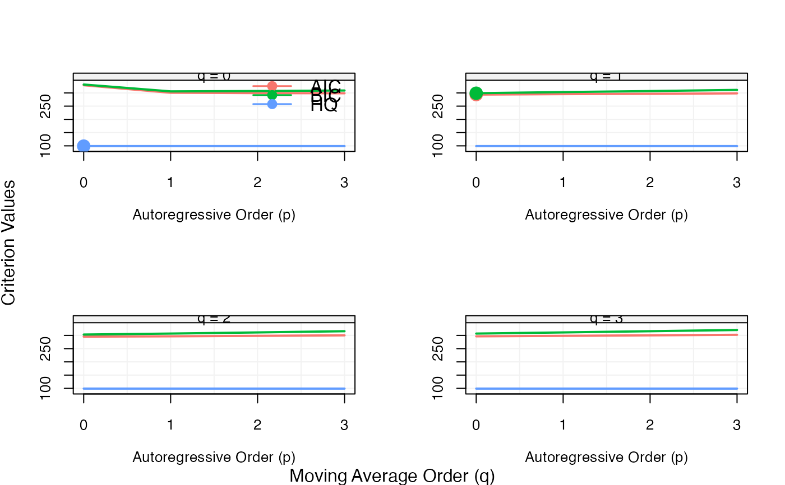
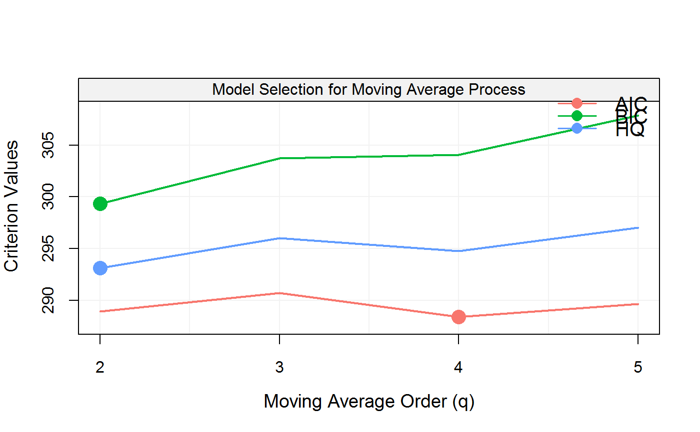
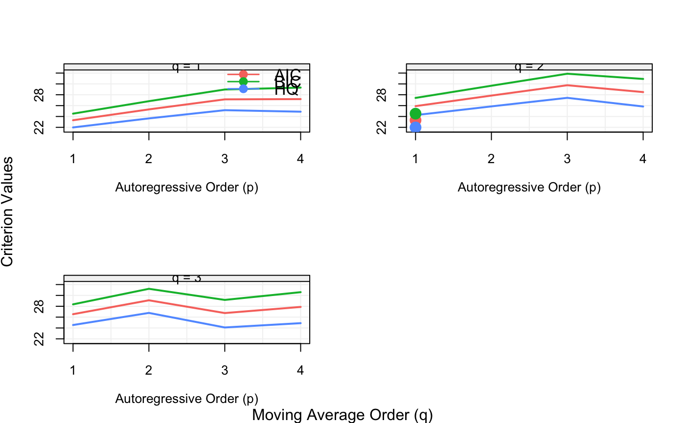

This function performs model fitting and calculates the model selection criteria to be plotted or used in best_model function.
select_arima(xt, p.min = 0L, p.max = 3L, d = 0L, q.min = 0L, q.max = 3L, include.mean = TRUE, plot = TRUE) select_arma(xt, p.min = 0L, p.max = 3L, q.min = 0L, q.max = 3L, include.mean = TRUE, plot = TRUE) select_ar(xt, p.min = 0L, p.max = 3L, include.mean = TRUE, plot = TRUE) select_ma(xt, q.min = 0L, q.max = 3L, include.mean = TRUE, plot = TRUE)
| xt | A |
|---|---|
| p.min | An |
| p.max | An |
| d | An |
| q.min | An |
| q.max | An |
| include.mean | A |
| plot | A |
best_model(x)#> #> Call: #> arima(x = xt, order = c(0, 0, 4), include.mean = include.mean) #> #> Coefficients: #> ma1 ma2 ma3 ma4 intercept #> 0.1942 -0.2309 -0.0796 -0.2268 0.1585 #> s.e. 0.1014 0.1074 0.1038 0.1094 0.0649 #> #> sigma^2 estimated as 0.9247: log likelihood = -138.21, aic = 288.41xt = gen_arma(10, c(.4,.5), c(.1), 1, 0) x = select_arma(xt, p.min = 1L, p.max = 4L, q.min = 1L, q.max = 3L)